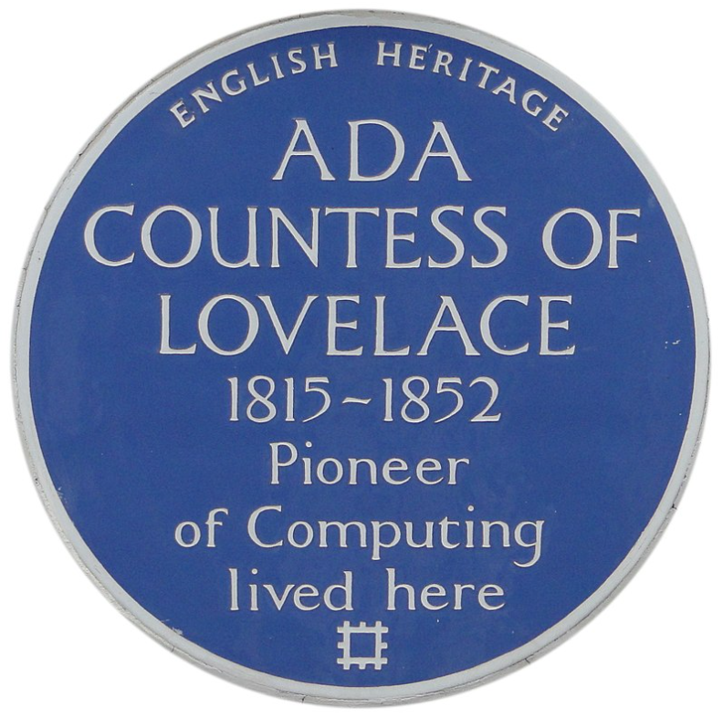

1815
- On the 10th of December Ada was born.
1816
- On the 16th of January Lord Byron and Lady Byron seperated, then she and Ada left for London on the 21st of April.
1824
- This was the year Lord Byron passed away, when Ada was eight years old.
1828
- Ada decided she wanted to fly by researching birds.
1829-1831
- During these years Ada was bedridden with measles.
- She was then able to walk with crutches in 1831.
1833
- Ada met Babbage for the first time.
1834
- Babbage created the analytical engine.
- Ada went to Northern England to see the Jaquard Loom.
1835
- On the 8th of July, she married William King.
1836-1839
- She had her first child Byron on the 12th of May, 1836.
- She had her second child Anne Isabella on the 22nd of September, 1837
- She had her third child Ralph Gorder on the 2nd of July, 1839.
1842-1843
- During this nine month period Ada translatede luigi Menebrea's paper on the analytical engine.
- During 1843 Ada published her translated article into the book Scientific Memoirs, which is where she created the first computer program.
1851
- This was the year Ada lost the bet on the horses, causing her to owe half a million dollars.
1852
- This was the year of Ada's death.
